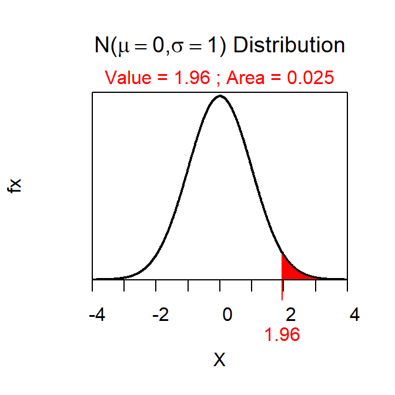
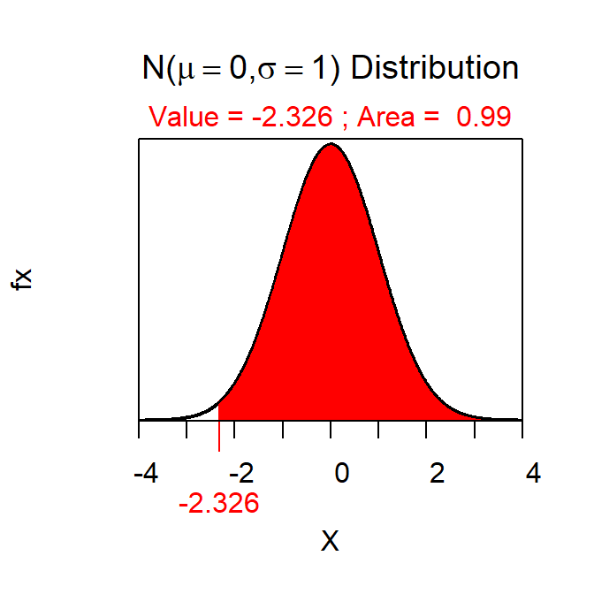

Confidence Region Calculations
- See below.
- C=0.90
- Lower bound
- Z*=-1.282 (Figure 1).
- 77.3 (this is 79.5-1.282\(\frac{12}{\sqrt{50}}\)).
- I am 90% confident that the true population mean is greater than 77.3.

Figure 1: Normal distribution representing the Z* the first confidence region example.
- See below.
- C=0.95
- Interval
- Z*= ± 1.960 (Figure 2).

Figure 2: Normal distribution representing the Z* the second confidence region example.- See below.
- C=0.99
- Lower bound
- Z*=-2.326 (Figure 3).

Figure 3: Normal distribution representing the Z* the third confidence region example.- See below.
- C=0.90
- Upper bound
- Z*=1.282 (Figure 4).

R Appendix
zstar <- distrib(0.9,type="q",lower.tail=FALSE)
zstar <- distrib(0.025,type="q",lower.tail=FALSE)
zstar <- distrib(0.99,type="q",lower.tail=FALSE)
zstar <- distrib(0.9,type="q")The remaining parts (d and e) to these questions were included on the second confidence regions assignment.